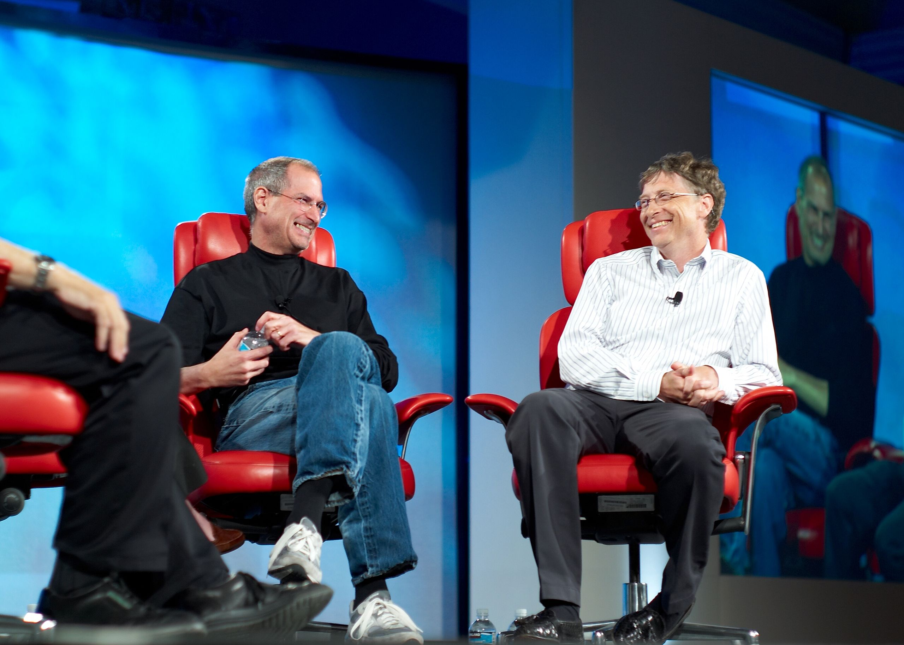

Steve Jobs
Cofounder of Apple Inc. and a charismatic pioneer of the personal computer era.

Jobs and Bill Gates at the fifth D: All Things Digital conference (D5) in May
2007.
Here's a time line of Steve Jobs Life
- 1955 - Steven Paul Jobs is born in San Francisco to Joanne Carole Schieble and Abdulfattah Jandali. The then-unmarried couple give up their son to adoption. Paul and Clara Jobs become Jobs' non-biological parents.
- 1961 - The Jobs family moves to Mountain View, Calif., part of what would later become known as Silicon Valley.
- 1968 - Jobs calls Bill Hewlett, the co-founder and co-namesake of Hewlett-Packard, looking for spare parts to build a frequency counter. Hewlett gives Jobs the parts, as well as an internship with the company that summer.
- 1970 - Meets future Apple co-founder Steve Wozniak through a friend. In Wozniak's 2006 autobiography, "iWoz," he notes that the two "hit it off" immediately, despite their four-year age difference.
- 1972 - Graduates from Homestead High School in Cupertino, Calif., and enrolls at Reed College in Portland, Ore., only to drop out a semester later. Jobs would go on to sit in on classes that interested him, such as calligraphy, despite not getting credit for them.
- 1974 - Begins a brief stint as an engineer at Atari. Working the night shift, he employs Wozniak to help whittle down the hardware required for a prototype of a single-player version of Pong, the game that would go on to become Breakout. Jobs leaves Atari in the summer to travel through India, only to return to California to live in a commune.
- 1976 - Co-founds Apple Computer with Wozniak and Ronald Wayne. That same year, the company sells the Apple I in the form of a kit that sells for $666.66.
- 1977 - Releases the Apple II, the first commercially available personal computer in a plastic case with color graphics--and Apple's first successful personal computer.
- 1980 - Apple goes public, putting Jobs' net worth north of $200 million.
- 1986 - For $10 million, buys the Graphics Group division of Lucasfilm that becomes Pixar Animation Studios.
- 1997 - Becomes CEO of Apple, initially as the de facto chief, then as interim chief in September.
- 1998 - Introduces the iMac, which becomes commercially available in August.
- 2001 - Opens Apple's first retail stores in Tysons Corner, Va., and Glendale, Calif.
- 2007 - Introduces the iPhone: "iPhone is a revolutionary and magical product that is literally five years ahead of any other mobile phone...We are all born with the ultimate pointing device--our fingers--and iPhone uses them to create the most revolutionary user interface since the mouse."
- 2007 - Inducted in the California Hall of Fame by Gov. Arnold Schwartzenegger.
- 2008 - Introduces the App Store as an update to iTunes. Also introduces the MacBook Air.
- 2009 - Jobs takes a 6-month leave of absence for medical reasons.
- 2010 - Introduces the iPad. Apple sells 500,000 iPads during their first week.
- 2011 - Goes on medical leave of absence from CEO post nearly two years after the six-month break he took to undergo a liver transplant.
- 2011 - Dies at age of 56.
Sometimes life is going to hit you in the head with a brick. Don't lose faith.
-- Steve Jobs